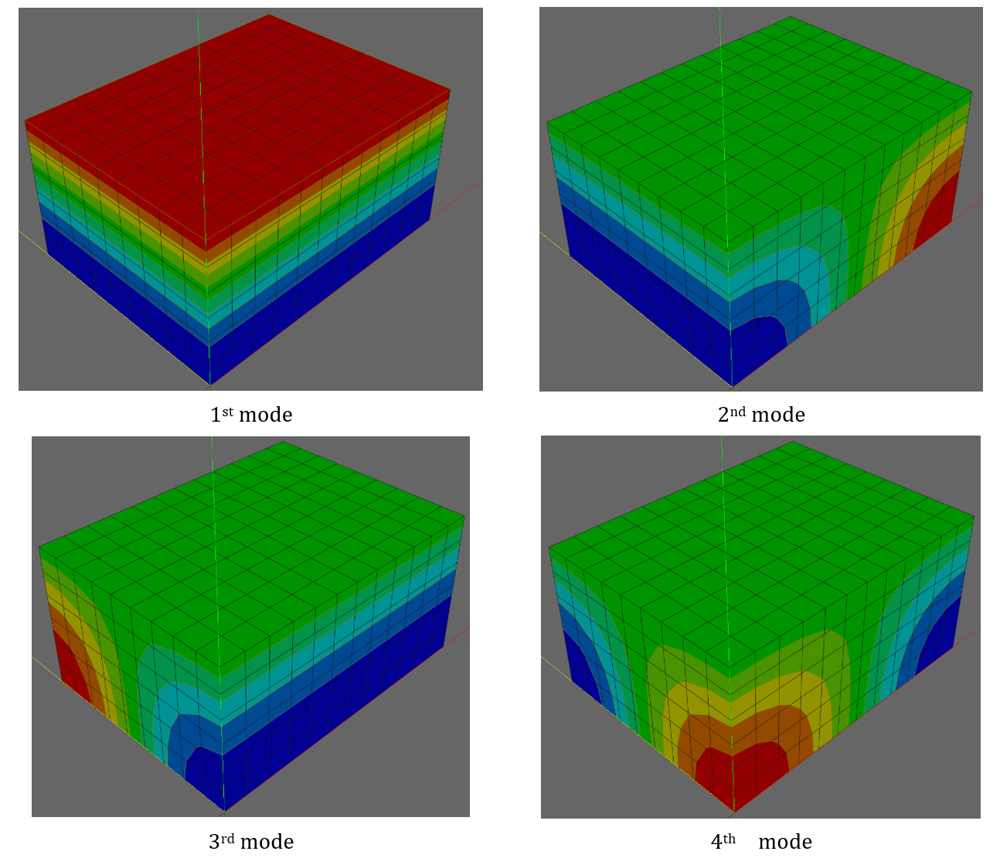
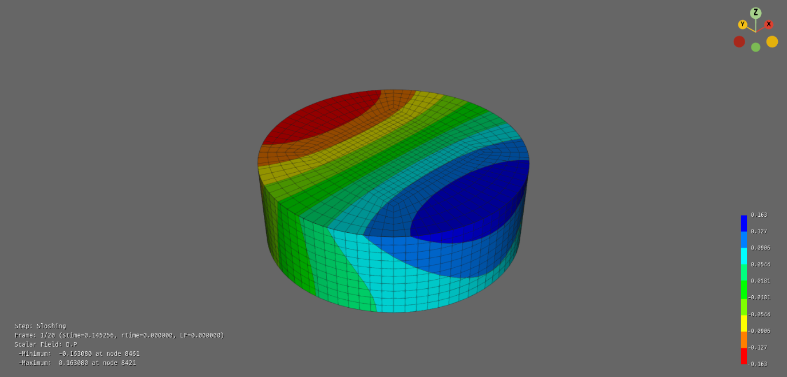
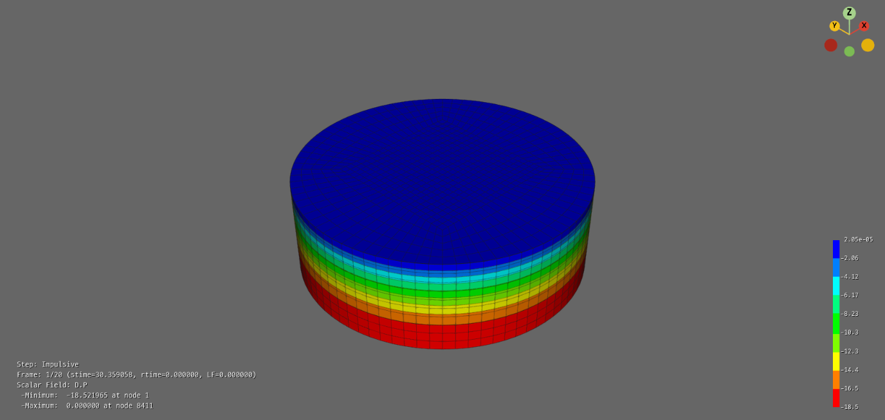
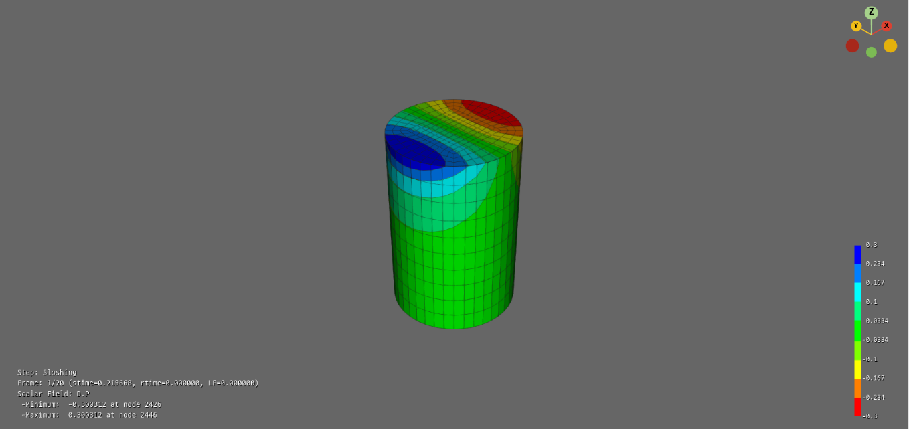
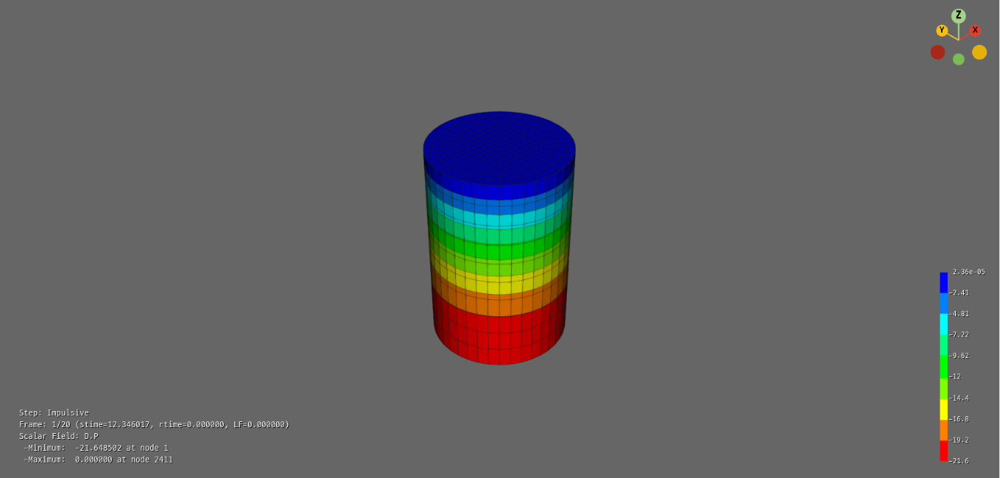

E.6 Acoustic Solid Element
E.6.1 Convective Natural Frequencies in a Rigid Rectangular Tank
For a rigid rectangular tank containing a compressible fluid with length \(\small L_{x}\), width \(\small L_{y}\), and height \(\small H\), where the top surface is subject to a zero-pressure condition and all other surfaces are subject to a zero-flux condition, the following eigenvalues can be derived analytically.
where
\(\small c\) is acoustic wave velocity, 1480 m/s/s if water
\(\small \alpha_{l} = \frac{l\pi}{L_{x}},\ \beta_{m} = \frac{m\pi}{L_{y}},\gamma_{n} = \frac{(2n - 1)\pi}{2H}\)
\(\small l,m = 0,1,2,\ldots,\ \ n = 1,2,\ldots\)
For a rectangular water tank with dimensions of 40 m (length), 30 m (width), and 20 m (height), a natural frequency analysis was performed under three-dimensional conditions using three different meshes, and the results were compared with the analytical solutions.

Figure E.6.1 Contour Plot of Mode Shapes
Table E.6.1 Natural Frequencies of 3D Rigid Rectangular Tank
| l | m | n | Analytic solution | Numerical solution | |||||||||
|---|---|---|---|---|---|---|---|---|---|---|---|---|---|
| alpha | beta | gamma | wlnm | frq | 8x4 | 12x6 | 16x8 | 16x12-P6 | 16x12-P8 | 16x12-P8+T4 | |||
| 0 | 1 | 0 | 0 | 0 | 0.07854 | 116.2389282 | 18.5000 | 18.6191 | 18.5529 | 18.5297 | 18.5242 | 18.5259 | |
| 1 | 0 | 0 | 0.07854 | 0 | 0 | 164.3866687 | 26.1630 | 26.3314 | 26.2377 | 26.2054 | 26.1758 | 26.1755 | |
| 2 | 0 | 0 | 0.15708 | 0 | 0 | 193.7315497 | 30.8333 | 31.131 | 30.9654 | 30.9076 | 30.9008 | 31.0321 | |
| 0 | 2 | 0 | 0 | 0.15708 | 0 | 225.2967575 | 35.9631 | 36.2474 | 36.0653 | 35.9496 | 35.9369 | 36.3651 | |
| 1 | 1 | 0 | 0.07854 | 0.07854 | 0 | 259.918145 | 41.3673 | 42.2775 | 41.7704 | 41.5937 | 41.5099 | 42.0162 | |
| 0 | 0 | 1 | 0 | 0 | 0.07854 | 302.6185304 | 48.1632 | 49.0003 | 48.5738 | 48.3938 | 48.6972 | 49.1273 | |
| 2 | 1 | 0 | 0.15708 | 0.07854 | 0 | 343.0194616 | 53.1680 | 54.3603 | 53.2028 | 53.2827 | 53.4984 | ||
| 1 | 2 | 0 | 0.07854 | 0.15708 | 0 | 348.7167845 | 55.0038 | 57.3957 | 56.7676 | 56.3055 | 56.1504 | 56.2974 | |
| 0 | 1 | 1 | 0 | 0.07854 | 0.07854 | 350.865724 | 55.8415 | 56.9935 | 56.3651 | 56.1431 | 56.1939 | 56.1939 | |
| 1 | 1 | 1 | 0.07854 | 0.07854 | 0.07854 | 357.5797658 | 58.5021 | 61.6157 | 59.8217 | 59.0764 | 59.5911 | 59.91 | |
| 3 | 0 | 0 | 0.235619 | 0 | 0 | 367.5797658 | 58.5021 | 61.6157 | 59.8217 | 59.0764 | 59.5911 | 59.91 | |
| 2 | 2 | 0 | 0.15708 | 0.15708 | 0 | 381.8089616 | 60.7346 | 63.6522 | 61.4999 | 61.5399 | 62.0894 | ||
| 3 | 1 | 0 | 0.235619 | 0.10472 | 0.07854 | 398.9176709 | 63.49972 | 66.4765 | 64.81 | 64.2307 | 64.6278 | 65.3594 | |
| 1 | 3 | 0 | 0.07854 | 0.235619 | 0.10472 | 399.9176709 | 63.49972 | 66.4765 | 64.81 | 64.2307 | 64.6278 | 65.3594 | |
| 2 | 1 | 2 | 0.15708 | 0.20944 | 0.07854 | 404.5233462 | 64.3819 | 66.7128 | 65.4134 | 64.9680 | 65.1404 | 65.5128 | |
| 2 | 0 | 2 | 0.15708 | 0 | 0.235619 | 419.1054158 | 66.7027 | 69.9335 | 68.1335 | 67.5055 | 67.0949 | 69.9077 | |
For a rectangular water tank with dimensions of 40 m (width) and 20 m (height), a natural frequency analysis was performed under two-dimensional conditions using three different meshes, and the results were compared with the analytical solutions. In the analytical solutions, the case of \(\small m = 0\) was always considered.
Table E.6.2 Natural Frequencies of 2D Rigid Rectangular Tank
| l | m | n | Analytic solution | Numerical solution | |||||||
|---|---|---|---|---|---|---|---|---|---|---|---|
| alpha | beta | gamma | wlnm | frq | 8x4 | 12x6 | 16x8 | 16x8-T | |||
| 1 | 0 | 0 | 0 | 0 | 0.07854 | 116.2389282 | 18.5000 | 18.6191 | 18.5529 | 18.5297 | 18.5296 |
| 1 | 0 | 1 | 0.07854 | 0 | 0.07854 | 164.3866687 | 26.1630 | 26.3314 | 26.2377 | 26.2054 | 26.2881 |
| 2 | 0 | 1 | 0.15708 | 0 | 0.07854 | 259.918145 | 41.3673 | 42.2775 | 41.7704 | 41.5937 | 41.8000 |
| 0 | 2 | 0 | 0 | 0.235619 | 0 | 348.7167845 | 55.0000 | 58.7365 | 56.9352 | 56.3055 | 56.2984 |
| 3 | 0 | 0 | 0.235619 | 0 | 0.07854 | 367.5797658 | 58.5021 | 61.617 | 59.8217 | 59.2761 | 59.5851 |
| 2 | 1 | 0 | 0.07854 | 0.235619 | 0 | 419.1054158 | 66.7027 | 69.934 | 68.6325 | 67.6535 | 68.6724 |
| 4 | 0 | 0 | 0.314159 | 0 | 0.07854 | 479.2653787 | 76.2775 | 83.066 | 79.6017 | 78.1423 | 78.3488 |
| 3 | 0 | 2 | 0.235619 | 0 | 0.235619 | 493.1600601 | 78.4889 | 83.694 | 80.5185 | 79.6281 | 82.91 |
Input File
-
tank2d-8x4.inp : 2 dimensional rectangular tank, 8x4 elements, AC2D4
-
tank2d-12x6.inp : 2 dimensional rectangular tank, 12x6 elements, AC2D4
-
tank2d-16x8.inp : 2 dimensional rectangular tank, 16x8 elements, AC2D4
-
tank2d-16x8-T3.inp : 2 dimensional rectangular tank, 16x8*2 elements, AC2D3
-
tank3d-8x6x4.inp : 3 dimensional rectangular tank, 8x6x4 elements, AC3D8
-
tank3d-12x9x6.inp : 3 dimensional rectangular tank, 12x9x6 elements, AC3D8
-
tank3d-16x12x8.inp : 3 dimensional rectangular tank, 16*12*8 elements, AC3D8
-
tank3d-16x12x8-T4.inp : 3 dimensional rectangular tank, 16*12*8*6 elements, AC3D4
-
tank3d-16x12x8-P6.inp : 3 dimensional rectangular tank, 16*12*8*2 elements, AC3D6
E.6.2 Sloshing Natural Frequencies in a Rigid Rectangular Tank
For an incompressible fluid, the natural frequencies of free-surface sloshing in a rectangular tank can be derived analytically (Lamb, 1945).
where
Housner (1957) proposed the following approximate formula for the fundamental frequency.
Here, \(\small L\) is the length in the direction of excitation.
Table E.6.3 Natural Frequencies of Sloshing Modes in 3D Rigid Rectangular Tank
| m | n | kmn | f | Numerical solution | ||||
|---|---|---|---|---|---|---|---|---|
| 10x30x6 | 20x60x11 | 20x60x11-P6 | 20x60x11 | 20x60x11-T4 | ||||
| 0 | 0 | 0.000 | 0.000 | 0 | 0 | 0 | 0 | |
| 0 | 1 | 0.053 | 0.084 | 0.084416 | 0.084368 | 0.084368 | 0.084372 | |
| 0 | 2 | 0.107 | 0.149 | 0.149068 | 0.148796 | 0.148783 | 0.148874 | |
| 1 | 0 | 0.160 | 0.194 | 0.195056 | 0.19439 | 0.194329 | 0.194702 | |
| 0 | 3 | 0.160 | 0.194 | 0.195056 | 0.19439 | 0.194343 | 0.195071 | |
| 1 | 1 | 0.169 | 0.200 | 0.201226 | 0.200551 | 0.200536 | 0.201349 | |
| 1 | 2 | 0.193 | 0.216 | 0.216947 | 0.216181 | 0.216238 | 0.217327 | |
| 0 | 4 | 0.214 | 0.229 | 0.230264 | 0.229004 | 0.228874 | 0.229771 | |
| 1 | 3 | 0.227 | 0.236 | 0.237313 | 0.236266 | 0.236372 | 0.237929 | |
| 0 | 5 | 0.267 | 0.257 | 0.259196 | 0.257612 | 0.257536 | 0.258952 | |
| 1 | 4 | 0.267 | 0.257 | 0.259909 | 0.257787 | 0.257734 | 0.260181 | |
| 1 | 5 | 0.312 | 0.278 | 0.281321 | 0.278901 | 0.278968 | 0.281839 | |
| 0 | 6 | 0.321 | 0.282 | 0.286557 | 0.283247 | 0.282861 | 0.285658 | |
| 2 | 0 | 0.321 | 0.282 | 0.286557 | 0.283247 | 0.282862 | 0.287921 | |
| 2 | 1 | 0.325 | 0.284 | 0.28854 | 0.285216 | 0.284879 | 0.290092 | |
| 2 | 2 | 0.338 | 0.290 | 0.294289 | 0.290893 | 0.290692 | 0.296245 | |
Table E.6.4 Natural Frequencies of Sloshing Modes in 2D Rigid Rectangular Tank
| m | km | f | Numerical solution | ||
|---|---|---|---|---|---|
| 30x6 | 60x11 | 60x11-T | |||
| 0 | 0.000 | 0.000 | 0 | 0 | 0 |
| 1 | 0.053 | 0.084 | 0.084416 | 0.084368 | 0.084372 |
| 2 | 0.107 | 0.149 | 0.149068 | 0.148796 | 0.148875 |
| 3 | 0.160 | 0.194 | 0.195056 | 0.19439 | 0.194722 |
| 4 | 0.214 | 0.229 | 0.230264 | 0.229004 | 0.229799 |
| 5 | 0.267 | 0.257 | 0.259909 | 0.257787 | 0.259258 |
| 6 | 0.321 | 0.282 | 0.286557 | 0.283247 | 0.285611 |
| 7 | 0.374 | 0.305 | 0.311438 | 0.306572 | 0.310062 |
| 8 | 0.427 | 0.326 | 0.335203 | 0.323875 | 0.333244 |
| 9 | 0.481 | 0.346 | 0.358247 | 0.349017 | 0.355533 |
| 10 | 0.534 | 0.364 | 0.380845 | 0.368738 | 0.377183 |
| 11 | 0.588 | 0.382 | 0.403204 | 0.387712 | 0.398377 |
Input File
-
sloshing2d-30x6.inp : 2 dimensional rectangluar tank, 30*6 elements, AC2D4
-
sloshing2d-60x11.inp : 2 dimensional rectangluar tank, 60*11 elements, AC2D4
-
sloshing2d-60x11-T3.inp : 2 dimensional rectangluar tank, 60*11*2 elements, AC2D3
-
sloshing3d-10x30x6.inp : 3 dimensional rectangluar tank, 10*30*6 elements, AC3D8
-
sloshing3d-20x60x11.inp : 3 dimensional rectangluar tank, 20*60*11 elements, AC3D8
-
sloshing3d-20x60x11-T4.inp : 3 dimensional rectangluar tank, 20*60*11*6 elements, AC3D4
-
sloshing3d-20x60x11-P6.inp : 3 dimensional rectangluar tank, 20*60*11*6 elements, AC3D6
E.6.3 Natual Frequencies in a Rigid Cylinderical Tank
For a cylindrical tank, various natural frequencies were calculated. The exact solution for sloshing is given as follows.
(1) Veletos (1984) proposed the following equation.
여기에서 \(\small \lambda_{j}\)는 \(\small \frac{dJ_{1}(x)}{dx} = 0\)의 해이며, 저차 3개 값은 \(\small \lambda_{1} = 1.8411837813406593\), \(\small \lambda_{2} = 5.331442773525033\), \(\small \lambda_{3} = 8.536316366346286\) 이다.
(2) Housner (1957) proposed the following approximate formula for the fundamental frequency of sloshing.
All sloshing frequencies are based on the assumption of incompressible water. When compressibility is considered, however, the exact solution for the impulsive component is the same as that for a rectangular tank with \(L_{x} = L_{y} = 2R\).
Solutions were compared for both a wide cylinder and a tall cylinder. The wide cylinder has \(R = 18.3\ \text{m}\) and \(H = 12.2\ \text{m}\), while the tall cylinder has \(R = 10\ \text{m}\) and \(H = 30\ \text{m}\). Two mesh types were prepared for each case, and the fundamental frequencies were compared.
Table E.6.5 Sloshing Freqencies of wideCylinder Model
| Numerical Solution | Analytic Solution | |
|---|---|---|
| Model | Natural Frequency | |
| wideCylinderIncomp-15x10 | 0.145258 Hz | 0.145075 Hz(Veletsos), 0.144846 Hz((Housner) |
| wideCylinder-15x10 | 0.145256 Hz | |
| wideCylinderIncomp-30x15 | 0.14516 Hz | |
| wideCylinder-30x15 | 0.145158 Hz | |
Table E.6.6 Impulsive Frequencies of wideCylinder Model
| Numerical Solution | Analytic Solution | |
|---|---|---|
| Model | Natural Frequency | |
| wideCylinder-15x10 | 30.3591 Hz | 30.3279 Hz |
| wideCylinder-30x15 | 30.3417 Hz | |

Figure E.6.2 Sloshing Mode of wideCylinder-20.x10

Figure E.6.3 Impulsive Mode of wideCylinder-20.x10
Table E.6.7 Solshing Freuencies of tallCylinder Model
| Numerical Solution | Analytic Solution | |
|---|---|---|
| Model | Natural Frequency | |
| tallCylinderIncomp-10x10 | 0.21567 Hz | 0.21389 Hz(Veletsos), 0.213656 Hz((Housner) |
| tallCylinder-10x10 | 0.215668 Hz | |
| tallCylinderIncomp-15x15 | 0.21567 Hz | |
| tallCylinder-15x15 | 0.215668 Hz | |
Table E.6.8 Impulsive Frequencies of tallCylinder Model
| Numerical Solution | Analytic Solution | |
|---|---|---|
| Model | Natural Frequency | |
| tallCylinder-10x10 | 12.346 Hz | 12.3333 Hz |
| tallCylinder-15x15 | 12.346 Hz | |

Figure E.6.4 Sloshing Mode of tallCylinder-10.x10

Figure E.6.5 Impulsive Mode of tallCylinder-10.x10
Input File
-
wideCylinder-20x10.inp : Wide Cylinder with 20*10 elements
-
wideCylinderIncomp-20x10.inp : Wide Cylinder with 20*10 elements, Incompressible Water
-
wideCylinder-30x15.inp : Wide Cylinder with 30*15 elements
-
wideCylinderIncomp-30x15.inp : Wide Cylinder with 30*15 elements, Incompressible Water
-
tallCylinder-10x10.inp : Tall Cylinder with 10*10 elements
-
tallCylinderIncomp-10x10.inp : Tall Cylinder with 10*10 elements, Incompressible Water
-
tallCylinder-15x15.inp : Tall Cylinder with 15*15 elements
-
tallCylinderIncomp-15x15.inp : Tall Cylinder with 15*15 elements, Incompressible Water
References
-
Lamb, H. (1945) Hydrodynamics, 6th Edition, Dover Publications.
-
Veletos, A.S.(1984), Seismic reesponse and design of liquid storage tanks, Guidelines for the seismic design of oil and gas pipeline systems, ASCE
-
Housner, G. W. (1957). Dynamic pressures on accelerated fluid containers. Bulletin of the seismological society of America, 47(1), 15-35.